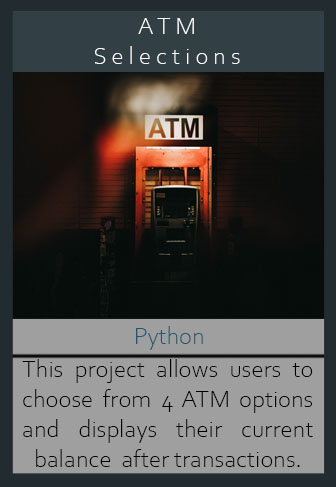

ATM Selections
 OverviewThe main idea for this code is implementing the use of command line arguments to create options for the end users to choose at an ATM. The user has 4 options to choose from: Check Balance, Withdraw Cash, Deposit Cash, Deposit Check. The console will print the list and its options for the user to choose from. If the user inputs an invalid option number, "Option does not exist" will appear on the console with the prompt "Would you like to choose another option? [Yes | No] ". Once a valid option is chosen, the user would be prompted to the correlating question. After the input, the console will perform the appropriate function and print out the Current Balance from the user's account. At the end of the transaction, the console will ask if the user would like to choose another option. If the user selects "No", the console will exit. If the user selects "Yes", they will be looped back to the "Enter option number: " line.
Takeaway
This is my first Python project that used command line arguments. I created this project as I was teaching myself Python so there isn't too much depth into the project since I am still in the process of learning. Python was not a huge part in my university curriculum as Java and SQL were, so I decided to take it upon myself to add Python to my skill set. I really enjoyed learning Python because of the code readability.
Tools
● PyCharm Community Edition 2022.3.3
Language(s)
● Python 3.11
GitHub Repo
Project Output
◁ Student Planning Mobile App My Website ▷